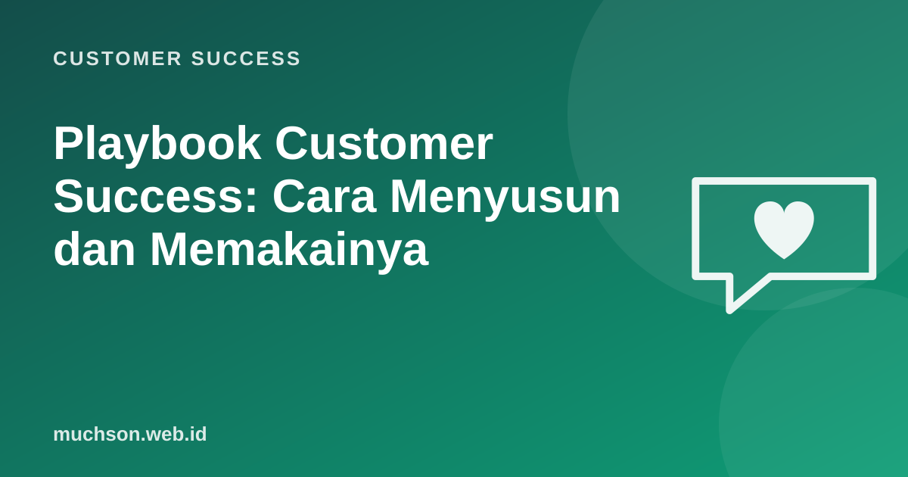

Beranda › Artikel › Customer Success
Customer SuccessPlaybook Customer Success: Cara Menyusun dan Memakainya
Tanpa playbook, setiap CSM menangani situasi yang sama dengan cara berbeda, dan kualitas layanan bergantung pada siapa yang kebetulan memegang akun. Playbook adalah resep yang bisa diulang: ketika situasi X terjadi, lakukan langkah-langkah ini, dengan pesan dan alat yang sudah disiapkan.

Struktur sebuah playbook
| Bagian | Isi |
|---|---|
| Nama | Mis. "Penyelamatan akun berisiko" |
| Pemicu | Kondisi yang mengaktifkan, sebisa mungkin otomatis |
| Tujuan | Hasil yang diinginkan dan batas waktu |
| Langkah | Urutan tindakan dengan pemilik dan tenggat |
| Template | Email, pesan, agenda panggilan |
| Kriteria selesai | Kapan playbook dianggap berhasil atau ditutup |
| Metrik | Bagaimana efektivitasnya diukur |
Contoh: playbook akun berisiko
Template pesan (Hari 2):
Halo Pak Andi,
Saya lihat pemakaian laporan harian di tim Bapak turun beberapa minggu
terakhir. Bisa jadi ada perubahan di tim atau ada kendala di sistem kami.
Boleh saya minta waktu 20 menit minggu ini untuk memastikan semuanya
berjalan sesuai tujuan Bapak? Pilihan: Rabu 10.00 atau Kamis 14.00.
Salam,
Rina, Customer SuccessPlaybook lain yang umum
Prinsip menulis playbook
- Mulai dari 3-5 situasi paling sering atau paling berdampak, bukan 30 sekaligus.
- Pemicu otomatis bila memungkinkan, agar tidak bergantung ingatan.
- Langkah cukup jelas untuk CSM baru, tetapi memberi ruang penilaian.
- Tinjau tiap kuartal: langkah mana yang tidak pernah dipakai atau tidak berhasil?
Tetap manusiawi
Playbook adalah pedoman, bukan naskah kaku. Pelanggan bisa merasakan bila mereka diperlakukan seperti nomor tiket. Gunakan template sebagai titik awal, lalu personalkan.
Tanya jawab
Di mana menyimpan playbook?
Di dokumen tim yang mudah dicari, dan idealnya terhubung dengan CRM atau platform customer success sehingga tugas dibuat otomatis.
Bagaimana mengukur keberhasilan playbook?
Bandingkan hasil akun yang menjalani playbook dengan sebelumnya: persentase akun berisiko yang pulih, waktu sampai nilai pertama, atau tingkat perpanjangan.
Apakah playbook cocok untuk tim kecil?
Justru sangat membantu, karena pengetahuan tidak hanya tersimpan di kepala satu orang dan anggota baru cepat produktif.
Sumber dan bacaan lanjut
- Reichheld dan Sasser (1990): Zero Defections (ringkasan Bain)
- Customer health score (artikel terkait)
- Onboarding pelanggan B2B (artikel terkait)
- n8n untuk otomasi pemicu (artikel terkait)